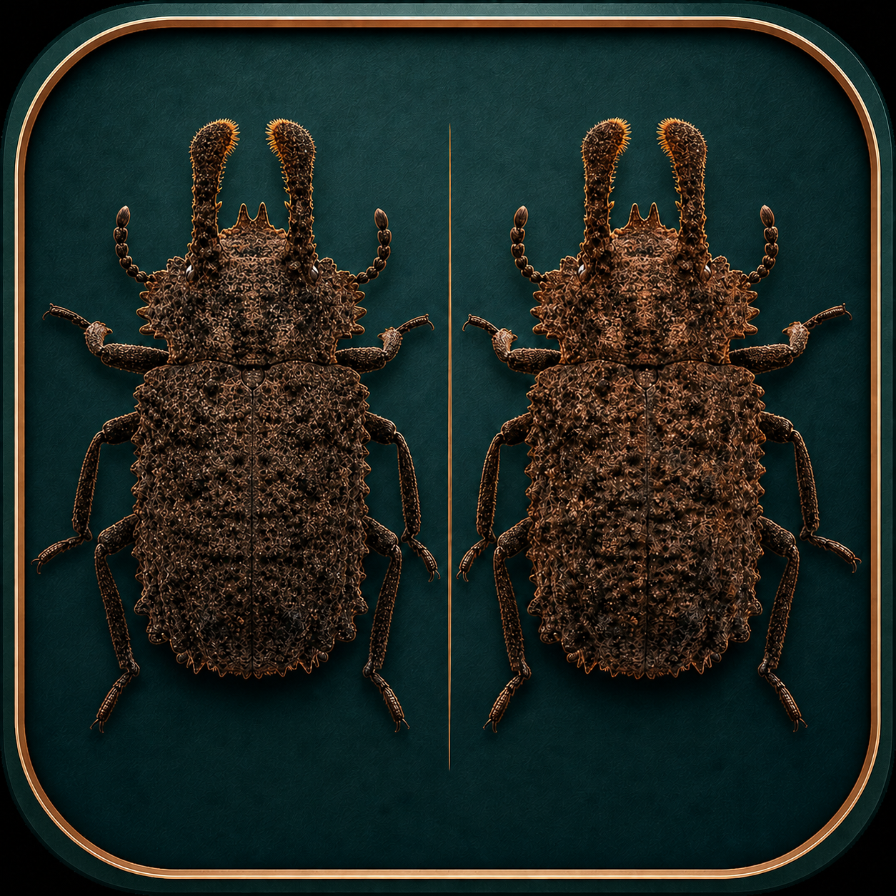
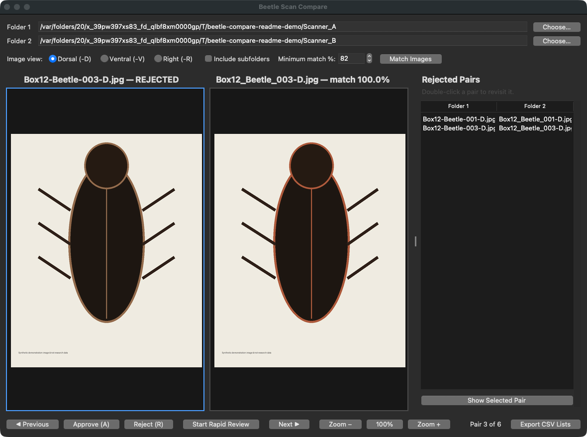
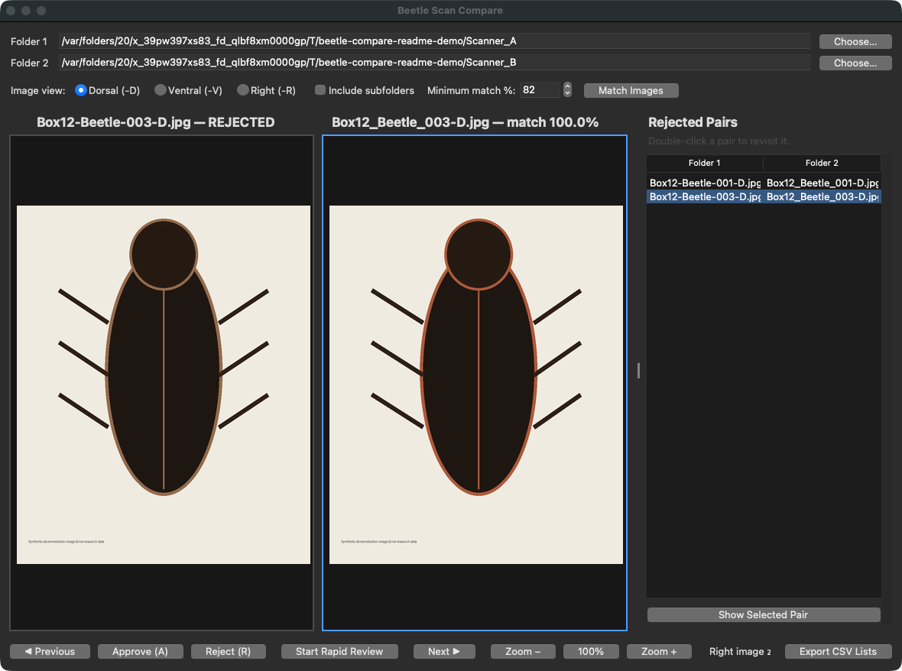

A practical guide to matching and rapidly reviewing two folders of beetle scan images.
Beetle-Scan-Compare-0.1.0-Apple-Silicon.dmg.The DMG includes Python and Pillow. No separate dependencies are needed. This build supports Apple Silicon Macs (M1, M2, M3, M4, or newer).
-D), Ventral (-V), or Right
(-R).Ambiguous or weak filename matches are reported as unmatched; the program does not silently guess. Source images are never changed.

| Control | Action |
|---|---|
| A | Approve and advance |
| R | Reject and advance |
| ← / → | Previous or next pair |
| Mouse wheel | Zoom the image under the pointer |
| Click and drag | Pan a zoomed image |

The right-hand Pair Navigator contains two tabs:
Use the vertical or horizontal scrollbar, then double-click a row—or select it and click Show Selected Pair—to jump to that pair. Jumping does not change the saved decision. Press A or R if you want to replace it.
Click Export CSV Lists and choose a permanent output folder. The app creates:
The in-progress review is also autosaved after every decision in the Mac
temporary folder as beetle-scan-compare/current_review.csv.